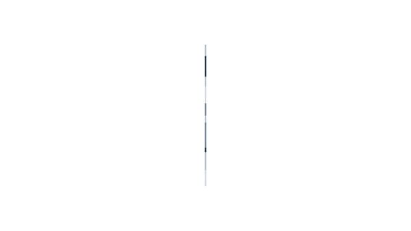
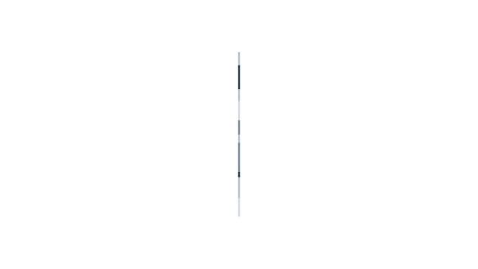

Along with the redesign of visual identity and website (project link), I worked with the marketing team to create new visual designs for various digital channels and media.
The following page showcases some of the digital marketing designs such as display ads, landing pages, social media assets, video and 2D & 3D illustrations.
(Selz was acquired by Amazon and the business is now operating under Amazon. The Selz brand itself no longer exists.)
Web • Digital • Motion • Illustration
A set of key visuals and marketing assets were created to appeal to targeted segments. The example here shows the visual designs for digital marchant segments.
Ebook Segment — Display Ads

Landing Page
Additional Images
Business Coach Segment — Display Ads
Landing Page
Videographer Segment — Display Ads

Landing Page
Motion graphics video and animations were created to enhance the brand experience and product marketing. The following example is made for promoting an expert service.


The Process
As the service can cover a broad spectrum of audience, I chose to translate the story into a visual metaphor that represents concepts and ideas.
This way, instead of depicting one specific example case, I believed it could establish a higher level of generality which can keep the audience from taking their interpretation of the story too narrowly.
This direction led to illustrating the scenes in an abstract way using simple shapes which combined together speak for the elements of the story.


 

New illustrations were made to be used in diverse digital channels such as social, EDMs and blog posts.


3D illustrations were also developed to complement the comprehensive visual design set of the new brand.


ANZ